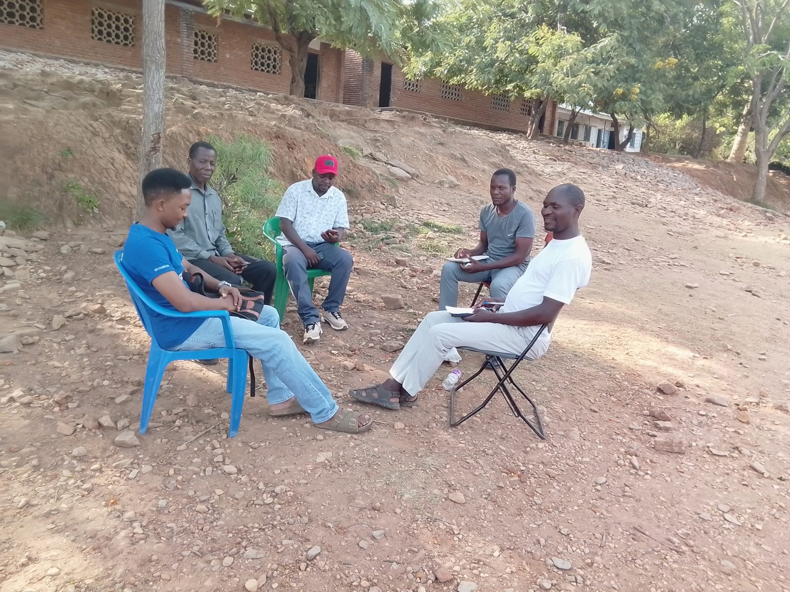
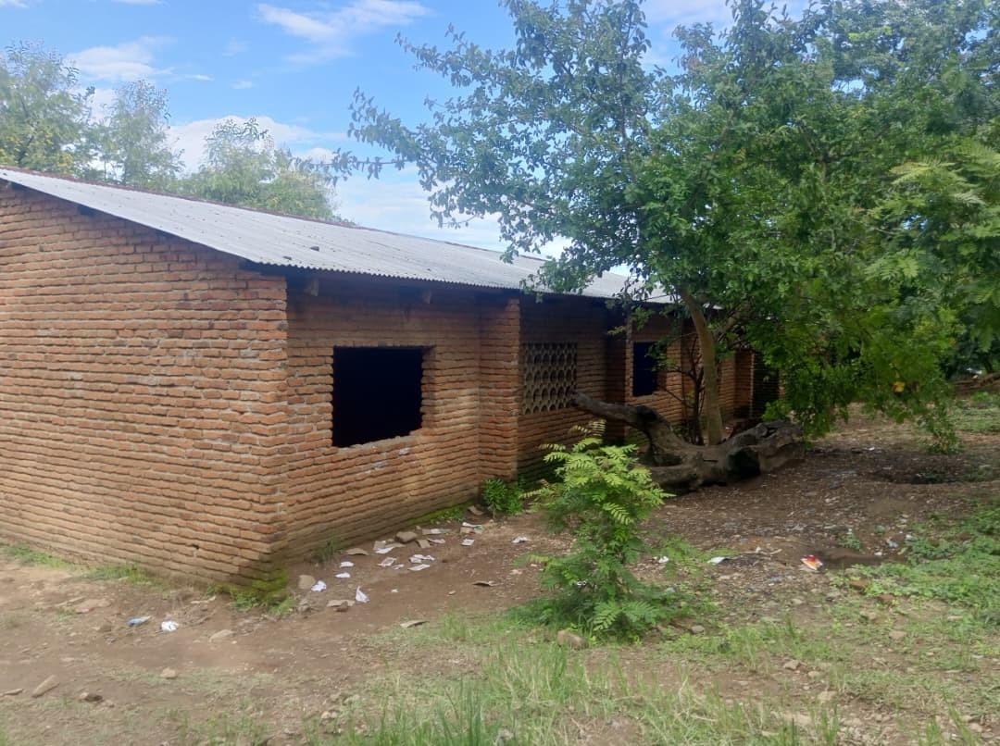
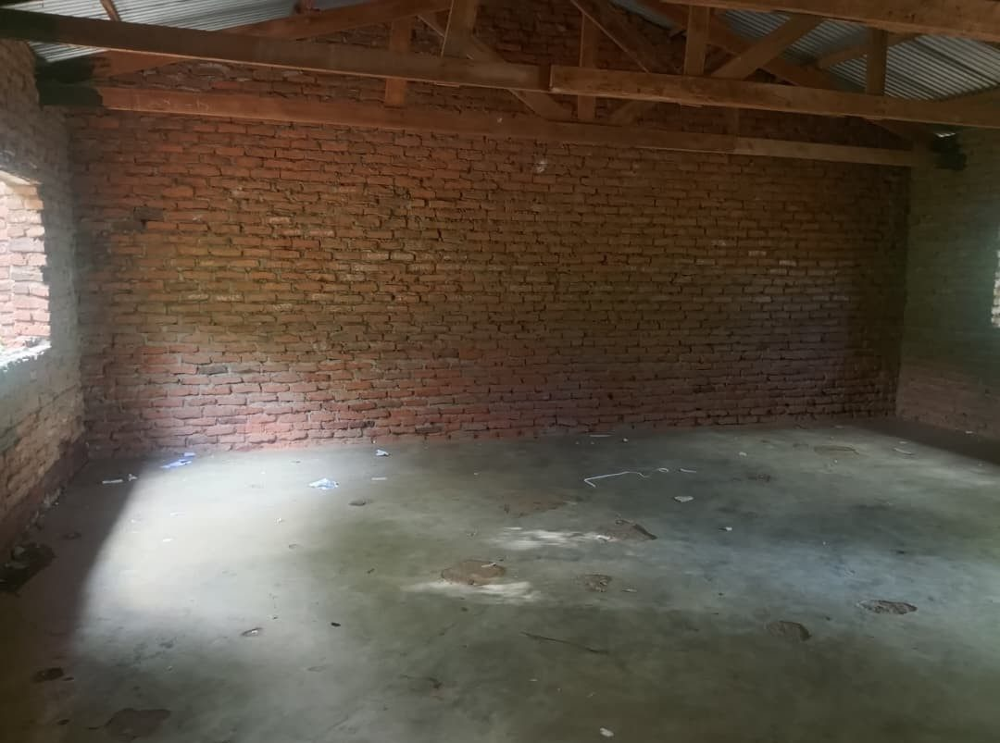
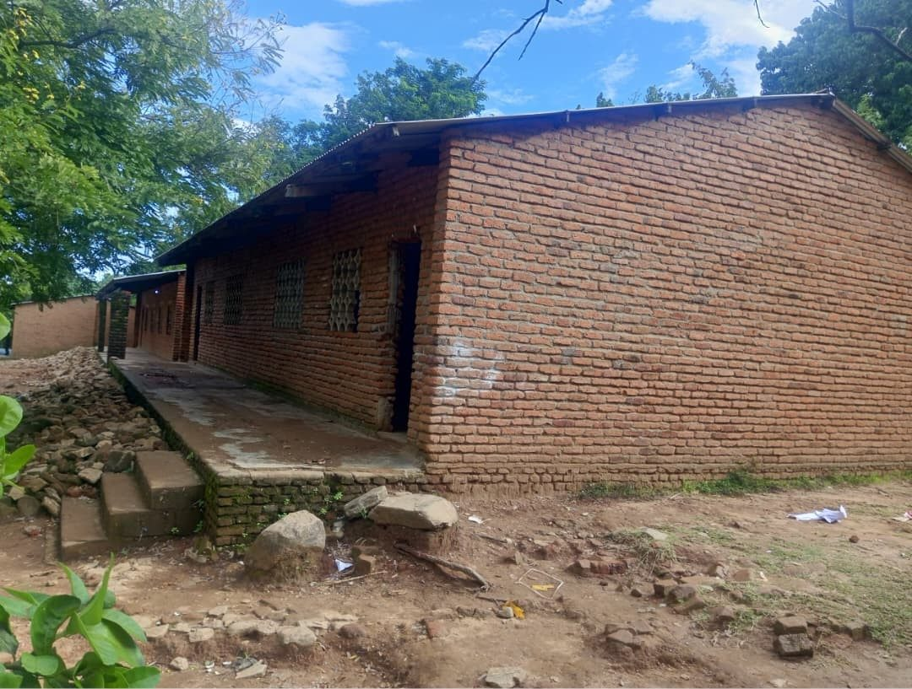
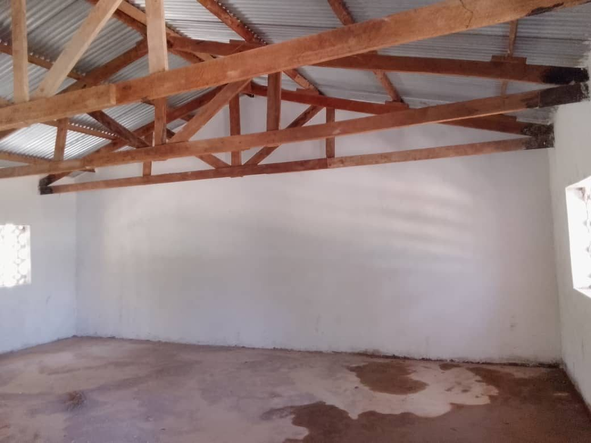
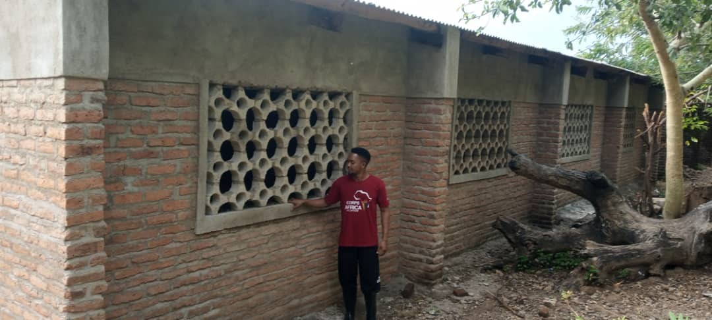
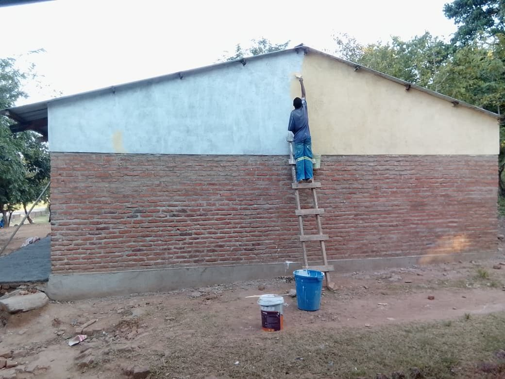
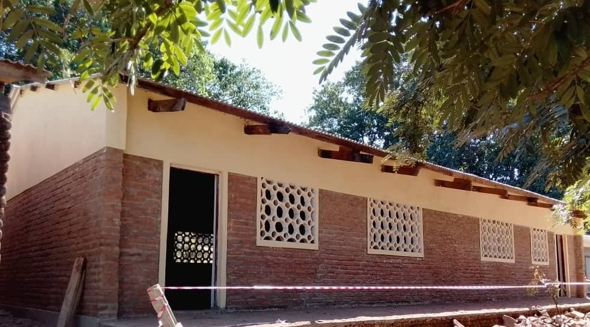
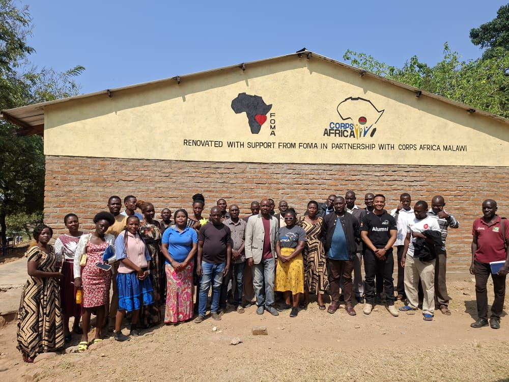
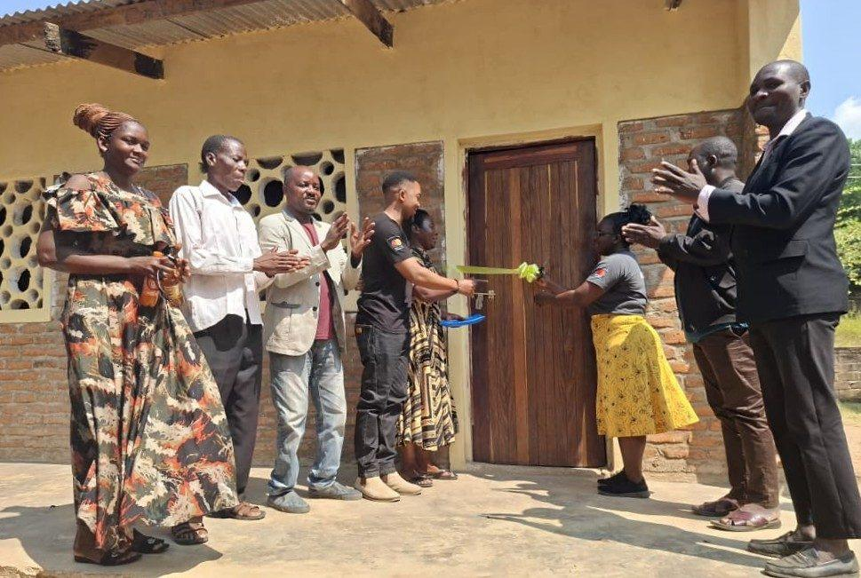

Completing two classrooms at Ighembe Primary School
How support from a UK donor and a 28% community contribution turned two unfinished rooms into safe classrooms, on budget, through a lost builder and a rainy season.










The problem
Ighembe Full Primary School serves five villages and over 1,000 learners. The community had built a classroom block for Standards 6 and 7 themselves, but money ran out before it had plastered walls, windows or doors.
Learners sat exposed to wind, dust and cold. Teachers struggled to hold attention, and absenteeism and dropout were rising in the upper classes.
How we did it, step by step
I identified the need and facilitated the project, working hand in hand with the headteacher, the CBO, the Village Development Committee (VDC) and the School Management Committee (SMC). Key decisions were made together.
I identified the unfinished block as the problem and brought together the headteacher, CBO, VDC, SMC and chiefs to assess it and agree roles.
I wrote the proposal and itemised budget for FOMA UK, with input from the headteacher and committees.
We secured two tranches of FOMA support, and the VDC and SMC mobilised cash, bricks, sand and labour from the community.
With the SMC and CBO, I ran procurement with local suppliers, supervised the builders and made regular site monitoring visits.
I wrote the final donor report with receipts and results against indicators. The SMC agreed the maintenance plan.
What went wrong, and how we handled it
The builder walked away
The contracted builder withdrew at a critical stage. Together with the VDC and SMC, we found and engaged a qualified builder from within the community so work did not stop.
The costs were underestimated
The new builder's assessment showed more work and materials than planned. After agreeing with the headteacher and committees, I re-budgeted, moved paint money to cement, and secured a second FOMA tranche of MWK 564,000 that brought the paint back.
Peak rainy season
Heavy rain slowed work and drying. The team adjusted the work plan around the weather. The schedule slipped, but the classrooms were finished within the approved budget.
Monitoring and evaluation
Indicator Tracking Table
Every indicator from the FOMA proposal, tracked to completion. The one shortfall, the finish date, is explained.
| Indicator | Baseline | Target | Result | Variance explained |
|---|---|---|---|---|
| Classrooms with plastered walls, inside and out | 0 | 2 | 2 | Target met |
| Doors fitted with steel frames | 0 | 2 | 2 | Target met |
| Breeze blocks moulded and installed | 0 | 80 moulded, 70 installed | 80 moulded, 70 installed | Target met |
| Classrooms painted | 0 | 2 | 2 | Paint was cut when costs rose, then restored with the second FOMA tranche |
| Classrooms with pointed walls and skirted foundations | 0 | 2 | 2 | Target met |
| Completion date | - | Mid-May 2026 | 27 June 2026 | Six weeks late: builder replaced, scope re-estimated, heavy rains |
| Learners and teachers using the classrooms | 0 | Standards 6 and 7 | 335 learners, 17 teachers | Rooms in full use since completion |
Direct beneficiaries by gender
Hover a bar to see the numbers.
Support by source
Total MWK 3,944,600. Hover a section to see the amount.
Financial accountability
Where the FOMA support went, and how we managed rising prices
We budgeted every item, then recorded the actual price paid. Cement came in cheaper than planned, which let us buy 35 bags instead of 21 and cover the extra work the new builder found.
FOMA support spent by category
Total MWK 2,824,600. Hover a bar to see the amount.
Planned against actual price, by item
Green items cost less than planned, gold items cost more. Hover to see both prices.
Source: FOMA UK final project report, with receipts for every purchase.
Built to last
The School Management Committee and PTA now own a maintenance plan, backed by a school fund. Teachers track attendance and participation against a baseline, so the school can show the difference the classrooms make.
The project was officially launched in July 2026 with community leaders and government representatives present.